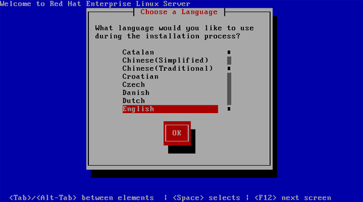
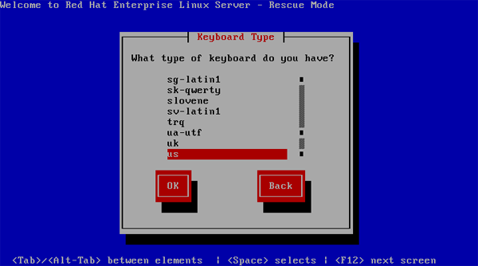
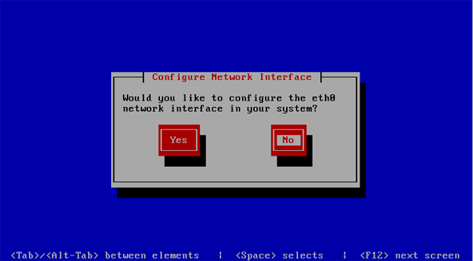
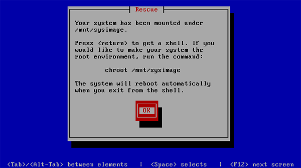

Using The Red Hat Rescue Environment
By Joey Prestia

There are several different rescue CDs out there, and they all provide slightly different rescue environments. The requirement here at Red Hat Academy is, perhaps unsurprisingly, an intimate knowledge of how to use the Red Hat Enterprise Linux (RHEL) 5 boot CD.
All these procedures should work exactly the same way with Fedora and CentOS. As with any rescue environment, it provides a set of useful tools; it also allows you to configure your network interfaces. This can be helpful if you have an NFS install tree to mount, or if you have an RPM that was corrupted and needs to be replaced. There are LVM tools for manipulating Logical Volumes, "fdisk" for partitioning devices, and a number of other tools making up a small but capable toolkit.
The Red Hat rescue environment provided by the first CD or DVD can really come in handy in many situations. With it you can solve boot problems, bypass forgotten GRUB bootloader passwords, replace corrupted RPMs, and more. I will go over some of the most important and common issues. I also suggest reviewing a password recovery article written by Suramya Tomar (http://linuxgazette.net/107/tomar.html) that deals with recovering lost root passwords in a variety of ways for different distributions. I will not be covering that here since his article is a very good resource for those problems.
Start by getting familiar with using GRUB and booting into single user mode. After you learn to overcome and repair a variety of boot problems, what initially appears to be a non-bootable system may be fully recoverable. The best way to get practice recovering non-bootable systems is by using a non-production machine or a virtual machine and trying out various scenarios. I used Michael Jang's book, "Red Hat Certified Engineer Linux Study Guide", to review non-booting scenarios and rehearse how to recover from various situations. I would highly recommend getting comfortable with recovering non-booting systems because dealing with them in real life without any practice beforehand can be very stressful. Many of these problems are really easy to fix but only if you have had previous experience and know the steps to take.
When you are troubleshooting a non-booting system, there are certain things
that you should be on the alert for. For example, an error in
/boot/grub/grub.conf, /etc/fstab, or
/etc/inittab can cause the system to not boot properly; so can
an overwritten boot sector. In going through the process of troubleshooting
with the RHEL rescue environment, I'll point out some things that may be of
help in these situations.
Getting started
First, if you can't get the system booted by normal means, check things like the order of boot devices in the BIOS just to make sure you're reading the right drive. You should also ensure that the drive is being recognized. Try to pinpoint where in the boot sequence the process is failing; take note of any unusual activity or messages. Remember that the boot process runs in this order:
- BIOS
- MBR
- GRUB -
/etc/grub/grub.conf - Kernel
- INIT -
/etc/inittab /etc/rc.d/rc.sysinit/etc/fstab- Runlevel
Pay close attention to any configuration files, as they are likely places for errors.
OK - it's time for the boot CD. The Linux rescue environment will load a minimal system with only a small subset of commands, but it should be enough for our purposes.
Rescue
After restarting the machine with the CD or DVD in the drive, you will need
to type linux rescue at the boot prompt instead of hitting
'Enter' for a normal install.
The next screen will ask us to choose a language.
The screen after that will ask for our keyboard layout.
At this point, we are asked if we would like to configure our network interfaces. If you need access to an NFS install tree or some other external resource, you should select this option. It will allow you to configure your network interfaces with IPv4 and/or IPv6; you can also choose manual or dynamic configuration of your IP address and subnet mask. If you think that you might need to reinstall a corrupt package and have no network install tree, you will still be able to access the RPMs on the CD or DVD. You will need to mount the CD or DVD on the rescue filesystem to do this.

The next stage of the rescue environment will scan your disks and attempt
to mount your partitions under /mnt/sysimage. Note that you have the option
to mount read/write, read-only, or to skip and not mount or attempt to
mount any partition. Here is where you ask yourself "what do I need to
do?" Only you know if you've experienced a drive crash and possible
data loss. Do you need to check or repair your partitions? If so, you'll
need to skip mounting - running fsck on mounted partitions is a
bad idea.
If you choose to mount your partitions, you'll see the following screen.

At this point, you can get started with troubleshooting and checking for
errors. Good places to start looking for problems depend on your particular
situation. System logs are always an excellent place if you are unsure of
the exact nature of your problem. Again, /boot/grub/grub.conf,
/etc/fstab, and /etc/inittab are the most common places
for errors that will prevent normal system startup.
If you get this next screen as a result of trying to mount your system
partitions, it is likely that you have an error in the
/etc/fstab file and a partition is being incorrectly specified
as your root device. You can check that your partitions are correctly
labeled and listed in /etc/fstab by writing down your
/etc/fstab file and running e2label
/dev/partition over your partitions. If you're not sure
what they are, you can get a listing by running fdisk -l
<your_device>.
Removing a GRUB Bootloader Password
This often comes up when you need to append an option to the GRUB boot stanza - at which point you find out that the last sysadmin neglected to leave us that information. Or we need to be able to boot into a different runlevel or emergency mode for troubleshooting - and a GRUB password is preventing us from doing this. Some system administrators think that a GRUB password is going to save them from unauthorized access; unfortunately, this is not true. If some one can touch your console, they can acquire complete access to your system and data.
- Boot from the RHEL boot CD and at the boot prompt type:
linux rescue. - Select your language and keyboard layout.
- Choose whether or not to start networking interfaces.
- Mount your partitions read/write.
- Run
vi /mnt/sysimage/boot/grub/grub.conf - Comment out or remove the line containing the password hash.
- Reboot.
As they say, "physical access equals root access."
Reinstalling RPMs from the CD or DVD
When you are troubleshooting, and you suspect that some critical files were
altered or a package became corrupted, the following command can be used to
verify that the file is still the same as it was in the RPM: rpm -Vf
/path/file. To verify if a specific RPM that was downloaded or is
on removable media is intact, use rpm -Vp
packagename.rpm. Recall that you can access the RPMs on the
install CD or DVD for reinstallation, although you'll need to mount that CD
or DVD manually.
- Boot from the RHEL boot CD and at the boot prompt type:
linux rescue. - Select your language and keyboard layout.
- Choose whether or not to start networking interfaces.
- Mount your partitions read/write.
- Mount the CD or DVD by typing
mount /dev/cdrom /mnt/source. - Select the RPM and reinstall it with
rpm --replacepkgs -ivh /mnt/source/Server/rpmfile.rpm --root /mnt/sysimage - Reboot.
Fixing a corrupted Master Boot Record
This will restore only the master boot record; note that the partition table will not be recovered by this sequence if it is damaged.
- Boot from the RHEL boot CD and at the boot prompt type:
linux rescue. - Select your language and keyboard layout.
- Choose whether or not to start networking interfaces.
- Mount your partitions read/write.
- Type
chroot /mnt/sysimageto enter your Linux environment. - Type
grub-install /dev/sdaorgrub-install /dev/hda(whatever is appropriate for your hardware.) - Reboot.
Backing up and resoring the MBR and partition table
It's a good idea to save a known-good copy of your MBR and partition table before problems arise; the former may be easy to recreate with GRUB, but the latter can be quite a challenge. To save a copy of both, run the following command:
dd if=/dev/sda of=mbr-parttable bs=512 count=1
This will create a file called "mbr-parttable" which should be saved off-system.
To restore the MBR and the partition table which had been saved with the previous command, run the following (assuming that the file you created is in the current directory):
dd if=mbr-parttable of=/dev/sda bs=512 count=1
Things to keep in mind
When in rescue mode, it's vital to stay focused on what you are doing. Think critically and don't do things haphazardly; pay attention to any errors you see. I personally keep paper notes of any problems that I notice, and document everything I do in detail. Proceeding from there depends on my best estimate of the problem: I may list my partitions and write them down if I believe that's where the problem is. I list the files that are involved with the process or problem that occurred and mark them off one by one in a organized manner as I go down the list. If you're testing out possible solutions, try only one thing at a time and if it is not the correct solution, revert to the previous state before going on to try the next fix. Make copies of files before you edit them. Ask yourself questions about why you would see the problem produce the error that it did. Read logs and see if you can deduce why the error occurred in the first place. A temporary patch may cost you more downtime at an even more inconvenient time later.
Standard Troubleshooting Model- Define the problem
- Gather information and data
- Form a hypothesis
- Try possible solutions
- Analyze data
- Draw conclusions
- Redefine the problem based on results
- Repeat as necessary
Talkback: Discuss this article with The Answer Gang
![[BIO]](../gx/authors/prestia.jpg)
Joey was born in Phoenix and started programming at the age fourteen on a Timex Sinclair 1000. He was driven by hopes he might be able to do something with this early model computer. He soon became proficient in the BASIC and Assembly programming languages. Joey became a programmer in 1990 and added COBOL, Fortran, and Pascal to his repertoire of programming languages. Since then has become obsessed with just about every aspect of computer science. He became enlightened and discovered RedHat Linux in 2002 when someone gave him RedHat version six. This started off a new passion centered around Linux. Currently Joey is completing his degree in Linux Networking and working on campus for the college's RedHat Academy in Arizona. He is also on the staff of the Linux Gazette as the Mirror Coordinator.